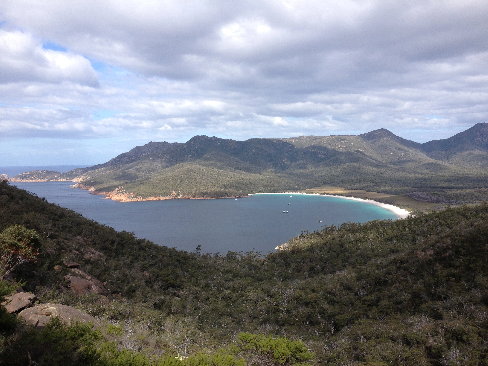

We made it to Melbourne on January '13 and once we got there, the idea was to stop, take a breath, spend some time to work in order to refill our bank account and maybe move on somewhere else. For the first temporary part of our stay, we settle down in a former nunnery that was turned into an hotel and after having known a group of people in Carlton Park, the park where we usually hang out, we moved into a big shared house, where we became part of a sort of local community with other tenants mostly coming from Latin America. The Melbourne we lived during these months was mostly the one of Fitzroy, with all the hipsters bars, the café and the Italian restaurants, the one that I would say was one of the most lively areas in town. During that time I was also a regular at the beautiful State Library of Victoria and paying occasional visits to the area of St. Kilda and Albert Park where I found a temporary job, working on a construction site in preparation for the F1 Grand Prix which is one of the biggest events that the city hosts at the beginning of every year, together with the Australian Open tennis competition. Melbourne is overall a nice place and I agree with the general opinion that states that the city is the most European of all Australian cities. By the time I was there I was living a pretty decent life: I had a job, a good social life and I could take part to all the cultural activities that the city can offer but I was somehow getting by and I wanted to save more money in order to explore the rest of the country in the following months so I decided to give a try with what most of backpackers do while in Australia in order to extend their visa which are farm jobs.

So here I go and at the beginning of March I jump on a ferry that in roughly 6/7 hours time takes me to the one I guess must be one of the most southern places on the globe which is Tasmania. I left the capital of Victoria in the most possible romantic way, seeing it getting smaller and smaller from the back of the ferry and disappearing at the horizon once we left the bay and we found ourself in the open sea. The journey was a pleasant Sunday journey and as soon as I was about to reach my destination, I could see the lighthouse of Devonport that brought into my mind the beautiful song My Lighthouse of the band Pulp, band that I had the chance to discover while I was in the city, together with other well known Australian bands like The Cat Empire or The Sticky Fingers, a band that I randomly met while in Hobart since we stayed in the same hotel. While in Tasmania I didn't have the luck to find so much work, apparently I reached Tassie a bit too late and most of the picking season was over, leaving not much work for those that were temporary living there. Following my philosophy of staying somehow active and keep doing something which is either work or travel, I did the best with the very limited resources at my disposal and visited the island on a certain number of small trips that took us mostly around the eastern part of the island to Launceston, Hobart, the paradisiac Wineglass Bay and another of my favourite places on earth due to the tranquillity and the wilderness that transpires called Bruny Island. While being in Tasmania I have also get the chance to know Luca & Michele, the people that would have became part of my crew for all the time I spent in the West coast and visiting Bruny Island together I guess was the chance to prove our relation and our driving skills and sense of orientation.